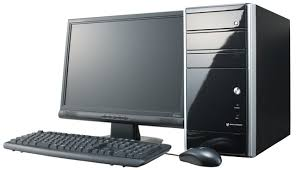

Компьютерная помощь
Компьютерная техника может давать сбой, и чаще всего это происходит в самый ненужный момент. К примеру, может сгореть блок питания, сломаться винчестер, материнская плата вышла из строя или видеокарта попросту накрывается – произойти может всё, что угодно. К тому же, проникновение в компьютер вредоносных вирусных программ может не просто воспрепятствовать входу в Интернет, а и вывести всю систему из строя.
Наша «компьютерная-помощь» предоставит Вам быструю профессиональную помощь в решении проблем с компьютером или ноутбуком. Если Вы не можете привезти к нам Вашу компьютерную технику, можно вызвать компьютерного мастера на дом либо в офис. Для того чтобы вызвать компьютерного специалиста, позвоните по телефону: 8(800)555-35-35.